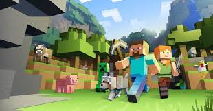

Spoofers are useful for many things bellow are some reasons you might use it
1. Getting into games after ip ban (happens a lot)
Ouch thats pretty much it but... it can be VERY useful.
Why our product is better then others
We have over 30 programmers updating it and bypassing games everyday
Here are the games it works on
1. game one
2 game two